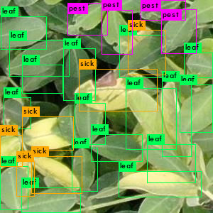

簡介
虎尾科大坐落於臺灣的農業大縣 - 雲林，當地的花生產量佔了全臺8成之多。而在這農業人口逐漸高齡化與減少的趨勢下，我們想若有一套能優化、維護農作物生長過程的系統的話， 想必能為農民們帶來幫助。
我們藉由無人機 (空拍端)、自製的側拍平台(側拍端)與影像辨識結合的技術來建立能偵測「花生葉病蟲害」的影像辨識模型，協助監測花生農作物的生長品質並減省需要下田巡視的時間與人力。
虎尾科大坐落於臺灣的農業大縣 - 雲林，當地的花生產量佔了全臺8成之多。而在這農業人口逐漸高齡化與減少的趨勢下，我們想若有一套能優化、維護農作物生長過程的系統的話， 想必能為農民們帶來幫助。
我們藉由無人機 (空拍端)、自製的側拍平台(側拍端)與影像辨識結合的技術來建立能偵測「花生葉病蟲害」的影像辨識模型，協助監測花生農作物的生長品質並減省需要下田巡視的時間與人力。

實地探訪農田，根據農田地形繪製3D圖設計機台與實作。
使用darknet yolov4進行圖像辨識模型。
希望在現代農村人口趨減、老化的環境下，我們的作品能夠協助節省農務上的人力勞動與時間，讓無人機透過自動化的方式，進行巡航、拍攝和影像辨識，來監測維護農作物生長的過程，協助地方農業朝向省時、省力的方向發展。